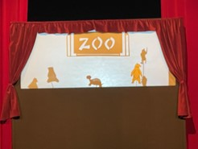

Lundi 03 mars
Aujourd'hui la classe 8 nous a invités à les rejoindre pour un exercice de géométrie en plein air.
Dans le but de comprendre la notion de rayon d’un cercle, ils ont mis en place un jeu de lancer d’anneaux. À chaque tour, de nouveaux joueurs rejoignaient la partie, tous placés à la même distance d’un piquet central.
Peu à peu, ils ont observé que cette disposition formait naturellement un cercle autour du piquet. Cette expérience concrète leur a permis de mieux comprendre la définition du rayon d’un cercle

Mardi 04 mars
Aujourd’hui, la classe 2 a pu visiter le musée du Théâtre Forain sous l’angle du voyage, thème de l'année, et de participer à un atelier d’expression orale.
Lors de cet atelier d’improvisation, les élèves ont été amenés à faire preuve de créativité et d’imagination.
Ils devaient inventer une courte pièce et la jouer devant leurs camarades, un exercice stimulant qui a favorisé leur aisance à l’oral.

Jeudi 06 mars
Aujourd’hui, la classe 1 expose ses œuvres !
Les élèves ont affiché leurs réalisations en arts plastiques dans les couloirs de l’école. Il s’agit de décors colorés représentant des arbres fleurissant à l’approche du printemps.
Leurs créations, aux couleurs vives et éclatantes, apportent une touche de gaieté et de renouveau à l’école, célébrant l’arrivée des beaux jours.

Vendredi 07 mars
Aujourd’hui, la classe 3 s’est envolée pour un voyage artistique !
Les élèves se sont rendus au musée du Théâtre Forain pour un “Voyager à travers le monde”, en lien avec le thème de l’année.
Après cette immersion dépaysante, ils ont participé à un atelier de fabrication de silhouettes d’animaux inspirées de l’histoire "Tous au zoo," préalablement lue et étudiée en classe.
Avant de rentrer à l’école, chacun a eu l’opportunité de monter sur scène et de s’initier au théâtre d’ombres avec brio ! Une expérience aussi ludique qu’enrichissante.
